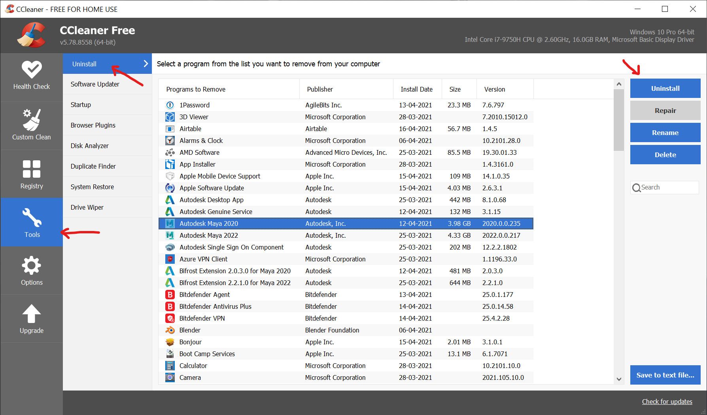
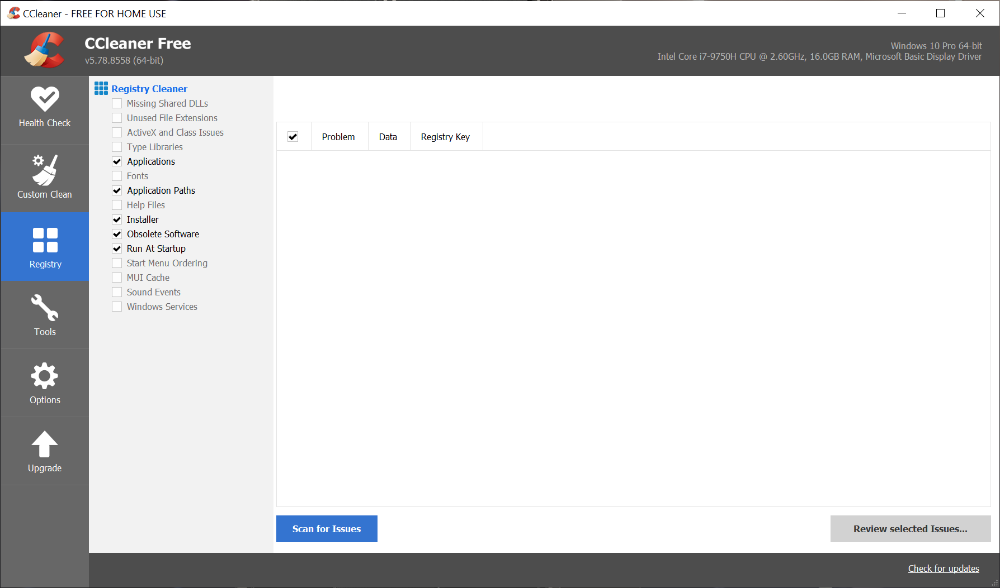

Instructions
- Install CCleaner from https://www.ccleaner.com/ccleaner/download/standard
- Uninstall Autodesk products in your machine under Tools → UnInstall 
- Go to Registry section in side bar. Uncheck everything except the following
- Applications
- Application Paths
- Installer
- Obsolete Software
- Run At Startup
